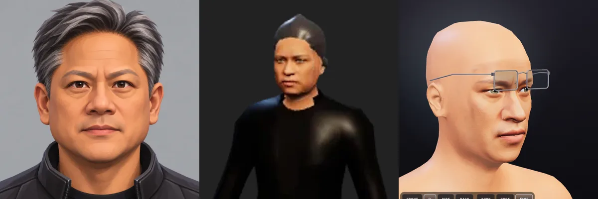
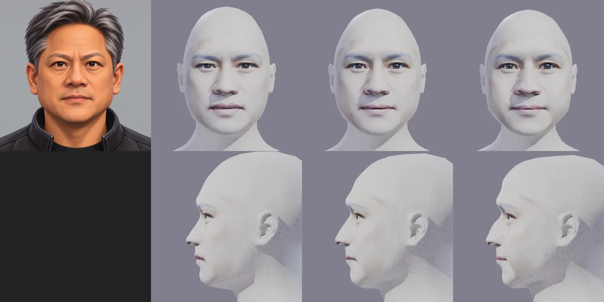
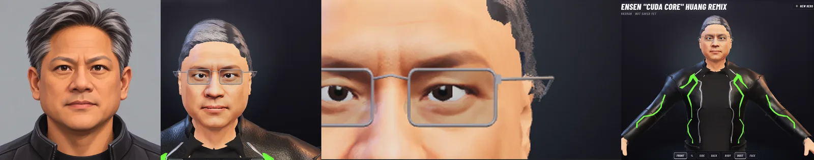
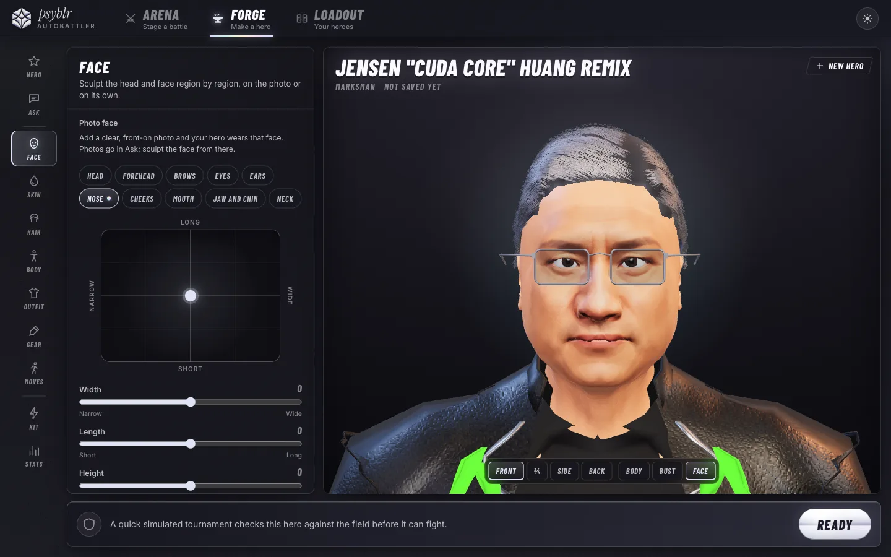
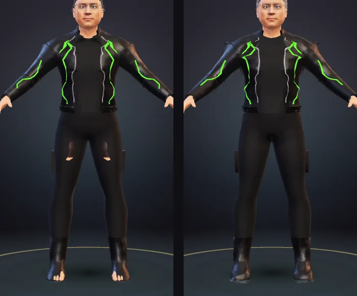
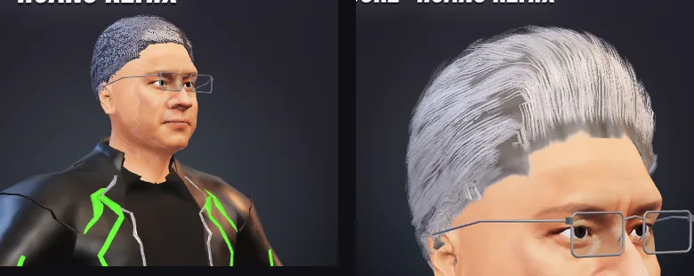
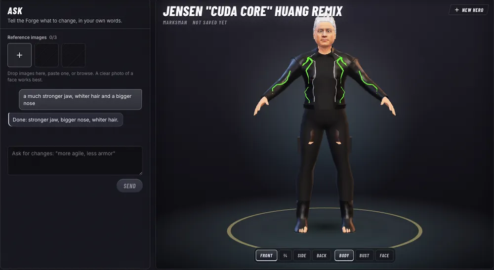
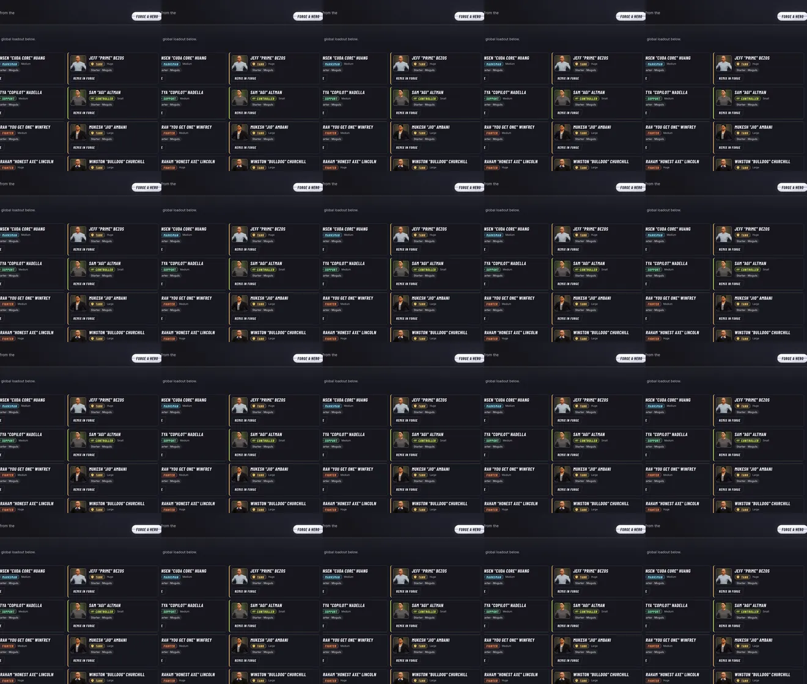

The creator: from a mannequin to a likeness
The owner's reference is a stylised portrait of Jensen Huang. Until this afternoon the Forge turned it into a bald MakeHuman mean head wearing a photo patch. This page keeps the before and after, and what changed underneath.
Where it started

The fit learns to leave the mean
The face fit used 39 MakeHuman target groups against front-view landmarks, with a ridge set in metres that overpowered the data, so every weight stayed under a quarter. It now fits 200 groups (every face target, left and right paired, ears included), uses MediaPipe's depth per landmark, and runs at a ridge four hundred times lower. Landmark error on Jensen fell from 1.69 mm to 0.85 mm, and the head took his breadth and jaw.

Hair, glasses, jacket and eyes come back
Half of a likeness is silhouette. The wardrobe's 89 raw items were refitted onto the new body's surface (tools/wardrobe/fit.ts --reference v2/m-medium, into public/kit/wear2), so hair, glasses and the jacket hang on it again. The eyeballs gained an iris region with a baked iris and pupil, tinted the hero's eye colour, so eye colour does something at last.

Sculpting at the creator's depth
The sculpt panel grew from six regions and 26 sliders to ten regions and 98: head, forehead, brows, eyes, ears, nose, cheeks, mouth, jaw and chin, neck. Every slider is a pair of MakeHuman targets on the full face basis, on top of whatever the photo fitted.

What still stood between this and the reference, at midday
The hair was the wardrobe's shell hair, not the reference's swept salt-and-pepper. The brows were only what the photo paints. The skin was a photo under plain lighting, not the stylised shading the canon asks for. And the reference was one front-on picture.
Evening: the clothes stop breaking over the body

Evening: the hair, silver and swept

Evening: ask for a change in words

Evening: every starter on the new body

What stands between this and FC 26 now
Breadth and the hair. Twenty hair styles against a hundred, six beards, no brow or skin-detail catalogue, five body morphs where the reference games scale every part, one item per slot where they layer sixty. The study of both creators and the plan to close the gap, library by library on top of the base model and rig, is docs/plans/2026-10-31-creator-library-plan.md.